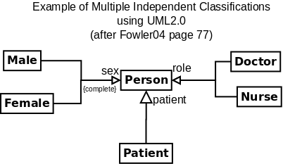

Table| Date | # | Topic (Participation 2pt) | Study pages (2 pts) | Quiz(15 pts) | Project Work(10 pts)
|
|---|
| Previous | 17 | GoF | 435-476 | Q8(1-476)
|
| Today | 18 | Domain Model III | 501-539 | - | W8(Model 3: model 2 improved)
|
| Next | 19
| Revu Interactions and DCDs
| 221-270
| -
[ 19.html ]
| Q9(1-535)
|
(Close Table)
Table| Version# | Date | Description | Author
|
|---|
| 0 | 2005-01-03 | Used boiler plate to make template | RJB
|
| 1 | 2006-01-20 | Updated reading page numbers | RJB
|
| 2 | 2006-03-08 | Added some notes | RJB
|
| 3 | 2007-01-10 | Added link to project | RJB
|
(Close Table)
[ w8.html ]
A long chapter with lots of notation which you need to master.
- 31.1 New concepts for NextGen
- *** 31.2 example of Generalization in a domain Model(important)
- *** 31.2 Super and sub classes(important). Aristotle was here!
- The is-a rule
- The 100% Rule
- * 31.4 When is it worth adding a subclass
- * 31.5 When is it worth adding a superclass
- 31.6 NextGen Example
- ++ These hierarchies define what are called
ontologies
that define a way of thought and the semantics of the client's language!
- ++ A domain can have
multiple hierarchies
, for example, in a Hospital
a Person is either Male or Female. But some people are Patients, as well.
And -- also -- You find special People who are Doctors and Nurses... And
so Person is simultaneously in these different hierarchies: a Male Nurse,
a Female Doctor, a Female Patient who is also a Nurse, and a Male Patient
that is neither a Docotr or a Nurse.... It really helps to draw a picture
of these possibilities and UML2.0 provides a way to label generalisations
to get this effect.

- * 31.7 Abstract classes: must have concrete subclasses, ultimately.
- ++ By the way, the {complete} constraint has the same effect on a single
generalization when there are many hierarchies. See above.
- * An interface is a special kind of abstract class that has no attributes and
no concrete functions/operations.
- * 31.8 But what if objects need to change class????
- State machines are good for modeling domain dynamics.
- UML has a diagram that pictures State Machines.
- State machines are often useful for sorting out technical problems
(like when to write cached data back to a database -- page 639)
- Use State machines to clarify ideas and record requirements.
- Separate the changes into a State or Status object
(Pure fabrication + Indirection).
The state is actually an attribute of the apparently changing object.
- The UML does allow objects to change subclasses,
if you write {dynamic} on a generalization,
but few people use it.
- Most programming languages don't allow objects to change their class.
- Four classic solutions to coding changing behavior.
Case
- Use the GoF State pattern
[ patterns.html#State ]
to code it. Here the state points at objects in different classes.
- Example
[ StatePatternExample.html ]
and code:
[ State.cpp ]
[ test.State.cpp ]
(uses a simple Hollywood "don't call us, we will call you" pattern)
OR
[ State2.cpp ]
[ test.State2.cpp ]
(A less pure GoF implementation)
- (Example in the text is on page 642)
(End of Case)
Case
- Add a state attribute that is an int or enumeration and write a
switch statement in each method that encodes changeable behavior.
This was the pre-object-oriented way to handle state changes.
- See page 640 for classic code example.
- Here is the running example using this technique:
[ State.not.cpp ]
[ test.State.not.cpp ]
- In Java 5 enum allows you to attach specific behaviors to the
different possible values. This can replace the switch in State.not.cpp.
(End of Case)
Case
- Again -- add a state attribute to the object and tabulate the transitions
associated with each operation as data in a file or data base.
- Makes it easy to change behavior patterns without reprogramming.
- Example in progress:
[ State.table.cpp ]
[ test.State.table.cpp ]
TBA
(End of Case)
Case
- Use Jackson semi-co-routines and Duff's device to simulate a concurrent process
(covered in CS320
[ cs320/lab/09.html ]
)
- Example:
TBA
(Close Case )
The first three solutions are well known techniques.
- When there is a single operation that changes behavior with the state,
then use the traditional switch-case... coding.
- When there is more than one operation that changes its behavior
with the state,
use the GoF State pattern code. (Polymorphism).
- Use data driven code to handle shifting requirements (Protected Variation)
- * 31.9 Inheritance in Programs vs Conceptual hierarchies
- 31.10 Association Classes: controlling the connections.
- ++ I prefer to reify complicated associations into a new class
with it's own attributes and methods. This is part of normalization for
the data. It is useful when your programming language doesn't
have association classes. Also this gives you a place to store the
attributes of the relationship. Like when it started and stopped, as
an example.
- 31.11 Aggregation and Composition: at last... but why so late?
- ++ Composition implies Aggregation. Aggregation implies Association.
- ++++ When in doubt: DON'T use either.
- + Exception: In a domain model use composition for real wholes and parts.
- + In designs put an arrow on an association to show pointers
class Wodget{ Widget * w1, *w2 ; ... };
- + In designs (only) use composition to show
storing an object inside an object:
class Wodget{ Widget w1, w2 ; ... };
- + In a design composition, officially, means that the parts are destroyed when the
whole is destroyed. You can therefore use a diamond to indicate the creator
and destructor classes.
- 31.12 Fixing an error NextGen Iteration 1?
- *** 31.13 Role Names (important)
- * 31.14 Roles...
- ** 31.15 Derived elements(important)
- 31.16 Qualified Associations
- * 31.17 Reflexive associations (DON'T PANIC. important but simple)
- * 31.18 Packages Organize your classes
- 31.19 Example: Monopoly
(important): like, I might set an exam question or use in an example...
[ 18q.html ]
[ 18x.html ]
. . . . . . . . . ( end of section Exercises) <<Contents | End>>
Table| - | - | Subject | Prepare | Guide | Quiz
|
|---|
| Next | 19
| Revu Interactions and DCDs
| 221-270
| -
[ 19.html ]
| Q9(1-535)
|
(Close Table)
[ w8.html ]
due at start of the next class.
[ 18r.html ]
- Artifact::="Anything that is created in the course of a project".
- artifact::=see above.
- DCD::diagram="Design Class Diagram", shows the classes that will be implemented in code.
[ 02DiceGameClasses.gif ]
(example).
- Deliverables::="A packet of artifacts that must be prepared by a deadline for review or distribution".
- Glossary::= See http://cse.csusb.edu/dick/cs375/uml.glossary.html.
- GoF::="Gang of Four",
[ patterns.html#GoF ]
- GRASP::patterns="General Responsibility Assignment Software Patterns",
a set of guidelines for designing objects and classes. They take a single
event that the system must handle and determine a good set of objects and/or classes to carry it out.
See
[ patterns.html#GRASP -- General Responsibility Assignment Software Patterns ]
- Grades::= See http://cse.csusb.edu/dick/cs375/grading/.
- KISS::Folk_law="Keep It Simple, Stupid", in agile processes this means never
drawing a diagram or preparing a document that doesn't provide value
to the clients and stakeholders. In all processes it means never
designing or coding what has no value now, see YAGNI.
- OO::shorthand="Object-Oriented".
- OOAD::="Object-Oriented Analysis and Design", See chapter 1 in text.
- patterns::="Documented families of problems and matching solutions", see
Patterns.
- Patterns::= See http://cse.csusb.edu/dick/cs375/patterns.html.
- Process::="How to develop software".
- RJB::=The author of this document,
RJB="Richard J Botting, Comp Sci and Engineering School, CSUSB".
- RUP::Process="Rational UP", a proprietary version of UP.
- SSD::="System Sequence Diagrams", see chapter 10 and
[ 02DiceGameSSD.gif ]
(example).
- TBA::="To Be Announced".
- UML::="Unified Modeling Language".
[ Unified_Modeling_Language ]
- UP::="Unified Process", an iterative, risk-driven, and evolutionary way to develop OO software.
- YAGNI::XP="You Ain't Gonna Need It", an XP slogan that stops you
planning and coding for things that are not yet needed. As
a rule the future is not predictable enough to program a feature
until the stakeholders actually need it now. In this class it also means
"It won't be on the final or in quizzes".
- XP::="Extreme Programming", the ultimate iterative, code-centric, user-involved
process.